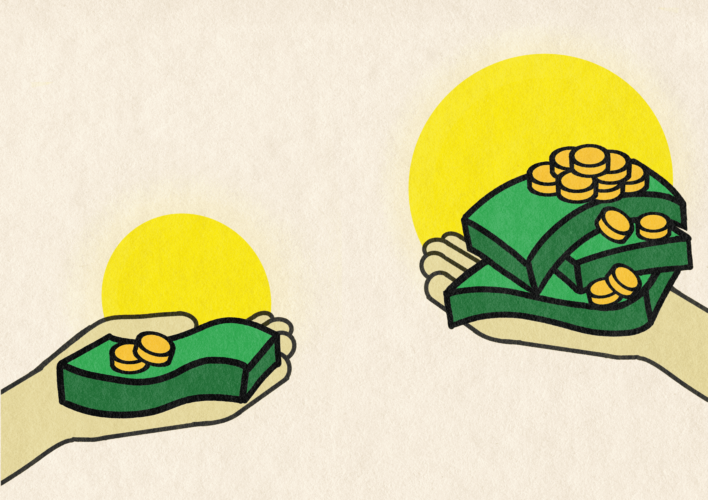

Mišljenje
Da li moj trud vrijedi manje?
Pišu: Sema Čeljo i Tarik Bećarević
Ilustracija: Naida Šorlija

Pišu: Sema Čeljo i Tarik Bećarević
Isti časovi, isto gradivo, isti testovi. Jedina razlika je općina u kojoj žive.
Stipendija za prosjek 5.0 u školskoj 2025/2026. godini, po općinama
Iznos za cijelu školsku godinu. U Ilidži i Novom Gradu stipendija zavisi i od prihoda porodice. Izvor: konkursi općina.
| Općina | Prosječna mjesečna plata | Stipendija za godinu |
|---|---|---|
| Centar | 1986 KM | 2000 KM |
| Novo Sarajevo | 1830 KM | 2000 KM |
| Stari Grad | 1778 KM | 1350 KM |
| Novi Grad | 1545 KM | 1000 KM |
| Ilidža | 1408 KM | 1430 KM |
| Hadžići | 1341 KM | 900 KM |
| Vogošća | 1325 KM | 765 KM |
| Trnovo | 1301 KM | 1000 KM |
| Ilijaš | 1080 KM | 1170 KM |
Neto plate za 2024. godinu (FZS). Stipendije za školsku 2025/2026.
Zašto moj trud nije jednako cijenjen kao tuđi?
Iz teksta Seme Čeljo i Tarika Bećarevića
Svaki trud vrijedi isto.
Prijedlog autora: jednake stipendije u svim općinama.
Cijeli tekst na drugaperspektiva.org